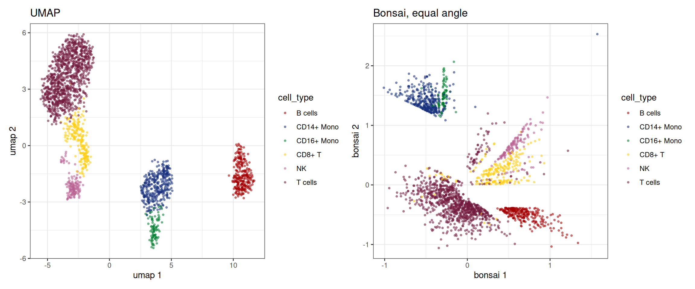

library(bixverse)
library(ggplot2)
library(data.table)
#>
#> Attaching package: 'data.table'
#> The following object is masked from 'package:base':
#>
#> %notin%
library(bixverse.plots)
library(magrittr)Cell trees with Bonsai
2026-10-10
Intro
UMAP and t-SNE squash a kNN graph into two dimensions and lose most of the global structure on the way. Bonsai (de Groot, et al., Nat. Biotechnol., 2026) takes a different route: it reconstructs a tree over the cells, every cell a leaf and every internal node an inferred ancestral state, with branch lengths that carry how much changed between them. The tree is the representation; a 2D layout is just a way to draw it.
What makes it work is that Bonsai uses the error bar on every measurement, not only the measurement. Those come from Sanity (Breda, et al., Nat. Biotechnol., 2021), which turns raw UMI counts into posterior log fold changes with error bars, gene by gene. bonsai_sc() runs both: counts from disk, Sanity, Bonsai, layout. Both are Rust ports under the hood, sanity-sc-rs and bonsai-rs.
We use the PBMC3k data here. If you have not worked through the PBMC vignette, do that first; the preprocessing below is the same, just condensed.
Preparing the data
Loading, QC and the usual HVG, PCA, neighbours and clustering chain. Bonsai itself needs none of the last four, but the clusters and cell types make the tree readable, and the UMAP gives us something to compare against.
pbmc3k_path <- download_pbmc3k()
tempdir_pbmc <- tempdir()
# load
sc_object <- load_mtx(
object = SingleCells(dir_data = tempdir_pbmc),
sc_mtx_io_param = get_cell_ranger_params(pbmc3k_path),
mtx_streaming = FALSE,
.verbose = FALSE
)
setnames_sc(sc_object, table = "var", old = "column1", new = "gene_symbol")
var <- get_sc_var(sc_object)
# doublets
scrublet_res <- scrublet_sc(sc_object)
sc_object <- add_sc_new_obs(
object = sc_object,
obs_data = get_data(scrublet_res)
)
cells_without_doublets <- sc_object[[c("doublet", "cell_id")]][
!(doublet),
cell_id
]
sc_object <- set_cells_to_keep(
x = sc_object,
cells_to_keep = cells_without_doublets
)
# qc
sc_object <- gene_set_proportions_sc(
sc_object,
list(MT = var[grepl("^MT-", gene_symbol), gene_id]),
streaming = FALSE,
.verbose = FALSE
)
qc_df <- sc_object[[c("cell_id", "lib_size", "nnz", "MT")]]
qc <- run_cell_qc(
metrics = list(
log10_lib_size = log10(qc_df$lib_size),
log10_nnz = log10(qc_df$nnz),
MT = qc_df$MT
),
cells_to_keep = get_cells_to_keep(sc_object),
directions = c(
log10_lib_size = "twosided",
log10_nnz = "twosided",
MT = "above"
),
threshold = 3
)
sc_object <- set_cells_to_keep(sc_object, qc_df[!qc$combined, cell_id])
# hvg, pca, knn, clustering, umap
sc_object <- find_hvg_sc(sc_object, hvg_no = 2000L, .verbose = FALSE)
sc_object <- calculate_pca_sc(sc_object, no_pcs = 30L, .verbose = TRUE)
#> Using sparse SVD solving on scaled data on 2000 HVG.
sc_object <- find_neighbours_sc(
sc_object,
neighbours_params = params_sc_neighbours(
knn = list(knn_method = "exhaustive")
),
.verbose = FALSE
)
sc_object <- find_clusters_sc(sc_object, res = 1, name = "leiden_clusters")
sc_object <- umap_sc(sc_object, .verbose = FALSE)
sc_object
#> Single cell experiment (Single Cells).
#> No cells (original): 2700
#> To keep n: 2103
#> No genes: 11139
#> HVG calculated: TRUE
#> PCA calculated: TRUE
#> Other embeddings: umap
#> KNN generated: TRUE
#> SNN generated: TRUE
#> MAGIC imputed: none
#> Residual model: none
#> Stale artefacts: noneCell types via scType, with the same markers as the PBMC vignette.
cell_markers <- c(
CD3D = "T cells",
CD3E = "T cells",
IL7R = "CD4+ T",
CD4 = "CD4+ T",
CD8A = "CD8+ T",
CD8B = "CD8+ T",
MS4A1 = "B cells",
CD79A = "B cells",
CD14 = "CD14+ Mono",
LYZ = "CD14+ Mono",
FCGR3A = "CD16+ Mono",
CDKN1C = "CD16+ Mono",
GNLY = "NK",
NKG7 = "NK",
FCER1A = "mDC",
CD1C = "mDC",
LILRA4 = "pDC",
PPBP = "Platelet",
PF4 = "Platelet"
)
cell_markers_dt <- stack(cell_markers) %>%
as.data.table() %>%
setnames(c("values", "ind"), c("cell_type", "gene_symbol")) %>%
.[, gene_symbol := as.character(gene_symbol)] %>%
.[, gene_id := var$gene_id[match(gene_symbol, var$gene_symbol)]] %>%
.[!is.na(gene_id)]
sctype_scores <- calc_sc_type_scores(
object = sc_object,
cell_marker_list = prepare_cell_markers(sc_object, cell_markers_dt)
)
obs <- get_sc_obs(sc_object, filtered = TRUE)
cell_type_anno <- score_clusters(sctype_scores, obs$leiden_clusters)
sc_object[["cell_type"]] <- cell_type_anno$cell_type[
match(obs$leiden_clusters, cell_type_anno$cluster_id)
]Running Bonsai
One call. No HVG selection needed: by default every gene is a candidate, and Sanity streams them through in chunks of 1,024, keeping only the genes with enough signal over their own noise (min_signal_to_noise, 1 by default). That is the gene selection of the Bonsai paper. Memory stays at one chunk of counts plus the survivors, whatever the number of candidates.
tree <- bonsai_sc(sc_object, .verbose = TRUE)
#> Running Sanity and Bonsai over 2_103 cells and 11_139 candidate genes.
tree
#> BonsaiTree: 2103 leaves, 1981 inferred ancestors
#> Genes: 347 used, 10792 dropped
#> Loglikelihood: -450291.6
#> Layout: equal_angle
#> Seconds: sanity 36.8 | ingest 0.0 | bonsai 34.7 | layout 0.0 | total 71.5Where did the time go? Every stage is timed, and total is the whole call as R saw it, so a gap between total and the stages would be time spent somewhere nobody measured. At this size Sanity is most of the run: it fits every one of the candidate genes, while the search only sees the few hundred that survive.
tree$timings
#> stage seconds
#> <char> <num>
#> 1: sanity 36.791755475
#> 2: ingest 0.009350788
#> 3: bonsai 34.664095494
#> 4: layout 0.000119637
#> 5: total 71.474987268The search reports its steps too: the loglikelihood after each and what it took. Steps 4 and 7 re-fit the branch lengths, 5 and 6 rearrange the tree (subtree pruning and regrafting, then nearest-neighbour interchanges), and 8 collapses the zero-length edges the rest leave behind.
tree$steps
#> step loglik seconds
#> <char> <num> <num>
#> 1: 1-2 linkage -668287.8 0.159439241
#> 2: 3 polytomy -668287.8 0.006939949
#> 3: 4 branch -461620.0 0.730122877
#> 4: 5 spr -450590.6 30.903820794
#> 5: 6 nni -450581.4 1.391708696
#> 6: 7 branch -450292.6 0.767660999
#> 7: 8 collapse -450291.6 0.696696414Which genes made it?
Most genes carry no usable signal over their Poisson noise and are dropped. The ones that stay overlap with, but are not, the HVGs.
hvg_ids <- get_gene_names_from_idx(sc_object, get_hvg(sc_object))
data.table(
genes_used = length(tree$genes_used),
genes_dropped = length(tree$genes_dropped),
also_hvg = sum(tree$genes_used %in% hvg_ids)
)
#> genes_used genes_dropped also_hvg
#> <int> <int> <int>
#> 1: 347 10792 236Want the tree on your own gene set instead? Pass hvg (1-indexed), e.g. bonsai_sc(sc_object, hvg = get_hvg(sc_object) + 1L). The signal-to-noise filter still applies on top.
Plotting
plot() draws every branch and a point per cell. colour_by takes one value per cell, in the order of the object’s cells.
cell_type <- get_sc_obs(sc_object, filtered = TRUE)$cell_type
plot(tree, colour_by = cell_type, point_size = 0.8) +
guides(colour = guide_legend(override.aes = list(size = 3)))
Every cell type gets its own subtree, and none of that was told to Bonsai: the annotation only colours the leaves. The CD16+ monocytes sit inside the monocyte subtree rather than next to it, and the NK cells branch off close to the T cells, which is what you would expect from their biology. Branch length is change, so the long isolated branches are cells that look like nothing else in the data.
The default is the equal-angle layout: every subtree gets a wedge proportional to its size. Two alternatives, recomputed from the stored tree without searching again. The dendrogram draws the branch lengths along x:
plot(tree, colour_by = cell_type, layout = "dendrogram", point_size = 0.5)
The hyperbolic projection maps the same layout onto the unit disk. How much it changes the picture depends on how far the tips sit from the root; on PBMC3k the branches are short and it barely does, on deeper trees it gives the crowded centre more room:
plot(tree, colour_by = cell_type, hyperbolic = TRUE, point_size = 0.8)
relayout_bonsai() does the same but keeps the result, which matters for the next step.
Bonsai next to UMAP
The leaf coordinates can go into the object as an embedding, so everything that plots embeddings works on them.
sc_object <- set_bonsai_embedding(sc_object, tree)
patchwork::wrap_plots(
embedding_plot_sc(
sc_object,
embedding = "umap",
colour_by = "cell_type",
discrete = TRUE
) +
ggtitle("UMAP"),
embedding_plot_sc(
sc_object,
embedding = "bonsai",
colour_by = "cell_type",
discrete = TRUE
) +
ggtitle("Bonsai, equal angle")
)
Bonsai on metacells
At 100k cells a tree over every cell is slow and hard to look at. Metacells compress first. Their raw counts are sums over their cells, and a sum of Poisson counts is Poisson, so Sanity treats a metacell exactly as it treats a cell, with its total counts as the library size. A metacell of 20 cells has about 20 times the counts, so its error bars are much tighter, and Bonsai weights by them. The same bonsai_sc() call works on MetaCells; every metacell becomes a leaf.
Here SEACells compresses the PBMCs to 100 metacells, and each metacell gets the cell type most of its cells carry.
supercells <- generate_supercells_sc(
object = sc_object,
sc_supercell_params = params_sc_supercell(),
.verbose = FALSE
)
supercells <- calc_meta_cell_purity(
supercells,
original_cell_type = get_sc_obs(sc_object, filtered = TRUE)$cell_type,
add_additional_info = "top_label"
)
tree_mc <- bonsai_sc(supercells, .verbose = TRUE)
#> Running Sanity and Bonsai over 106 metacells and 11139 candidate genes.
tree_mc
#> BonsaiTree: 106 leaves (2103 cells), 91 inferred ancestors
#> Genes: 2138 used, 9001 dropped
#> Loglikelihood: -119805.9
#> Layout: equal_angle
#> Seconds: sanity 11.5 | ingest 0.0 | bonsai 4.4 | layout 0.0 | total 16.0The same PBMCs as 100 metacells: a few seconds instead of the minutes the cell-level tree took, most of it Sanity. And the summed counts are deep enough that thousands of genes clear the signal-to-noise bar, against a few hundred for single cells, so the tree sees far more of the transcriptome.
size_by_cells = TRUE scales every leaf by the cells behind it.
plot(
tree_mc,
colour_by = supercells[[]]$mc_top_label,
size_by_cells = TRUE,
point_size = 1
)
The subtrees of the cell-level tree survive the compression, and the monocytes come out sharper: CD14+ and CD16+ split into two branches of one monocyte subtree. A few T-cell metacells sit on the NK branch; T and NK cells share much of their cytotoxic programme, so that is where the tree is least sure of the labels. What the metacell tree cannot show is anything inside a metacell, so pick the compression to match the resolution you care about.
Scaling
The search grows a little faster than linearly with the cell number. In bonsai-rs’s own benchmarks on ten cores it took about 70 seconds at 10,000 cells and 210 seconds at 25,000. Sanity comes on top and grows with the number of candidate genes; CPU has been made fast, GPU is even faster. bonsai_gpu_sc() in bixverse.gpu (from version 0.3.5 onwards) takes the same arguments, returns the same BonsaiTree, and runs Sanity on the device.
On 10,000 simulated cells with all 16,974 genes as candidates (M1 Max, ten cores):
| Sanity | Bonsai search | total | |
|---|---|---|---|
bonsai_sc() |
60 s | 80 s | 140 s |
bonsai_gpu_sc() |
5 s | 80 s | 65 s |
Both kept the same 2,751 genes. With Sanity on the GPU the tree search is the clear cost, and that is where 100k cells will hurt. Metacells are the way around it: compress first and the tree has a few thousand leaves instead of 100k.
Clean up
unlink(tempdir_pbmc, recursive = TRUE, force = TRUE)